Проектирование и реализация on-premise мультиагентного голосового ИИ-ассистента медицинского центра с GraphRAG, обеспечением врачебной тайны и соблюдением 152-ФЗ
Серверная разработка, интеграции и эксплуатация сервисов в промышленной среде.
КРОК, 6 лет: старший backend-разработчик
Корпоративные Telegram-боты и боты на других платформах, микросервисы и интеграции для заказчиков системного интегратора.
Последние 3 года — сервисы с искусственным интеллектом и агентные системы
Сейчас — AI-инженер в Bitmanager AI: платформа голосовых ИИ-агентов, распознавание речи, оркестрация языковых моделей, оценка качества диалога.
Тот же класс задач, что и в дипломном проекте: голос, агенты, периметр данных.
Ценность
Что получает клиника
Ассистент закрывает справочную линию и запись, не выходя за периметр. Эффект измеряется тремя величинами: доля обращений без оператора, CSAT, время линии. Проверка — A/B против живой регистратуры.
⚖️ Закон — часть архитектуры
Речь, карты и генерация не покидают клинику. Облачный контур дешевле, но для сведений, составляющих врачебную тайну, он неприменим: 152-ФЗ и 323-ФЗ ст. 13 закрываются размещением и проверкой прав, а не инструкцией модели.
📞 Очередь короче
Подготовка к исследованию, филиал и свободное окно закрываются в том же обращении. Оператору остаются жалобы, нестандартные случаи и всё, где нужно человеческое решение.
👩⚕️ Линия высвобождается
Цель устойчивого режима — около 1,5 ставки справочной линии и ≈ 2,2 млн ₽ в год чистой экономии ФОТ после вычета сопровождения контура.
📊 Эффект доказуем
Часть входящих остаётся у оператора, часть ведёт ассистент. Доля без оператора растёт при CSAT не ниже контроля. Выход чужой карты в контекст модели или нарушение запрета диагноза останавливают испытание.
План
Содержание
Рамка контурапериметр, 152-ФЗ, что входит в объём и что остаётся вне поставки
Стек и ADRчетыре места контура, затем девять решений с отклонёнными вариантами
Архитектура C4периметр, плоскости, компоненты; каналы и ручки API
Доступправило Policy и три пациента: представитель, ребёнок, другой пациент
Знания и данныеGraphRAG, онтология, ER, загрузка корпуса и живой запрос
Размещение и экономиказоны сети, ёмкость, TCO, локальный прогон стенда
Метрикионлайн на живой линии, офлайн до выкладки, A/B и цели года
Выводыправовая рамка, доступ, архитектура, стоимость владения
Цель
Замкнутый контур клиники
Голосовой ассистент типового медицинского центра: справка по услугам и подготовке, запись, перенос и отмена. Текст запроса, карты и синтез речи остаются внутри периметра.
🔒 Периметр
Распознавание речи и генерация — внутри клиники. Внешние облачные сервисы речи и моделей не вызываются.
🎙️ Один диалог
Голос и чат — одна программа разговора. Карту открывает тот, кто спросил, а не канал входа.
🕸️ Граф знаний
Услуги, врачи, филиалы, подготовка. Карточки — в CRM. МКБ-10 — терминология, не диагноз.
📅 Запись через подтверждение
В календарь попадает только то, на что пациент сказал «да». Представитель записывает ребёнка по опеке.
🚫 Вне объёма
Диагноз, клинические назначения, обучение моделей, промышленная телефония. Границы поставки зафиксированы в реестре требований.
🔌 Внешние порты
Телефония и CRM — за границей поставки. Система зависит от контракта порта, не от вендора.
Стек
Четыре места контура
Карта контура: где ведётся диалог, где хранятся знания и где выполняются вычисления. Конкретные решения и отклонённые варианты — на следующем слайде.
01 · вход
🎙️ Голос и чат
Пациент звонит или пишет на сайте. Оба канала входят через один шлюз и подчиняются одним правилам.
02 · разговор
🧭 Оркестратор
Определяет маршрут реплики, запрашивает подтверждение на запись и передаёт диалог оператору, когда опоры в знаниях нет.
03 · знания и учёт
📚 Граф, индекс, карточки
Прайс и памятки — в графе и индексе. Карточки и визиты — в учётной системе. Секреты — в хранилище.
04 · ускорители
⚡ Речь и генерация
Одна карта обслуживает распознавание и синтез речи, вторая — генерацию ответа. Ускорители вынесены в отдельный сегмент сети.
Стек
Девять решений и отклонённые варианты
Что принято, что отклонено и по какой причине. Полные записи — в репозитории.
ADR-0001
🔒 On-premise
Данные не покидают периметр клиники
Отклонено: облачный API, в том числе со схемой анонимизации
ADR-0002
👪 Один контур и ReBAC
Сеть филиалов, общая карта; опека до 15 лет по ребру GUARDIAN_OF
Отклонено: отдельная база на пациента
ADR-0003
🧠 T-pro-it-2.1
База Qwen3-32B: русский язык и вызов инструментов
Отклонено: модели от 70B в этой поставке
ADR-0004
⚡ 2× H100 + L40S
Генерация и речь разведены по узлам
Отклонено: аренда GPU на горизонте трёх лет
ADR-0005
⚙️ vLLM
Единственный движок генерации в контуре
Отклонено: SGLang, TGI, TensorRT-LLM
ADR-0006
🔎 bge-m3
Эмбеддинги и переранжирование, контекст 8192 токена
Отклонено: e5 и FRIDA с контекстом 512
ADR-0007
🔷 Neo4j + Qdrant
Онтология клиники и фрагменты документов с меткой доступа
Отклонено: файловый FAISS без фильтра доступа, рекурсия в PostgreSQL
ADR-0008
🔀 LangGraph
Один маршрут на голос и чат; проверка прав — обязательный шаг
Отклонено: линейный скрипт, CrewAI и AutoGen
ADR-0009
🎙️ Whisper и Silero
Распознавание, разметка говорящих и синтез в периметре
Отклонено: облачные Speech API
C4 · L1 Context
Периметр клиники
Слева — люди и телефония, справа — учётные системы. Персональные данные и текст запроса за периметр не выходят ни на одном плече.
C4 · L2 Container
Управление диалогом и хранилища
Верхняя плоскость ведёт разговор: принимает звонок или чат, выбирает путь, проверяет права. Нижняя держит граф, индекс, карточки, секреты и модель. Вход в обе — через один шлюз.
Управление диалогом
Шлюз, маршрут, проверка ввода и прав, работа с записью. Здесь решается, что ответить и кому что можно.
Хранилища и модели
Граф услуг, фрагменты документов, карточки в CRM, сессии, секреты и генерация. Исходящих соединений за периметр нет.
C4 · L3 Component
Узлы графа состояний
Одно приложение, а не отдельный сервис на каждый шаг. Проверка прав стоит перед генерацией: чужой фрагмент до модели не доходит — значит, не может быть пересказан.
Каналы
Голос и чат ведёт один оркестратор
Голос — основной канал. Распознавание и синтез только меняют форму реплики: смысл, маршрут и права одинаковы для звонка и для чата на сайте.
Контракт
Четыре ручки API
Внешняя граница системы — четыре метода HTTP. Актор передаётся заголовком X-Actor-Id и берётся из учётной записи или определившегося номера, но не из тембра голоса.
POST /v1/chat
Реплика чата на сайте. На вход — текст и номер сессии, на выход — ответ, намерение, идентификаторы допущенных узлов и фрагментов.
Контур измерений: задержка и нагрузка считаются здесь.
POST /v1/voice
Реплика звонка. На вход — транскрипт и метки говорящих, дальше — тот же оркестратор и та же проверка прав.
Разметка говорящих делит реплики, но прав не даёт.
GET /v1/audit/{request_id}
Решение доступа по конкретному запросу: кто спрашивал, чья карта, по какому основанию допущено или отказано, какие фрагменты вошли в контекст.
Доказательная запись для внутреннего аудита и проверки по 152-ФЗ.
GET /health
Проверка доступности процесса для балансировщика и мониторинга.
Без данных пациента и без обращения к модели.
Когнитивная схема
Как из реплики получается ответ
Реплику сначала проверяют: нет ли просьбы о диагнозе и лишних персональных данных. Оркестратор выбирает путь — справочник, запись или оба. Чужие фрагменты отсекаются до модели. Модель формулирует только по допущенному. На выходе — озвучка или текст.
Доступ · ADR-0002
Организация, карта и тот, кто спрашивает
Сначала граница организации, затем карта человека, затем право — и всё это до вызова модели. Звонок и чат проходят одну и ту же проверку.
Одна организация
Сеть филиалов и одна карта пациента: приём на Лесной виден и на Южном. Другое юридическое лицо — отдельный контур, а не копия стека.
Карты не смешиваются
Отдельная база на каждого пациента не создаётся, регистр один — CRM. Филиал доступ к карте не ограничивает, карта другого пациента закрыта всегда.
Одной своей учётной записи мало
Если доступ ограничен собственной записью, представитель не откроет карту ребёнка — и учётные данные начнут передавать в обход. Для медицинской организации это неприемлемо (ADR-0002).
Представитель и ребёнок
Пациент 1 читает свою карту и карту пациента 2, если в реестре есть активная опека и ребёнку меньше 15 лет. Слов «это мой сын» недостаточно.
Другой пациент и регистратор
Пациент 3 видит только свою карту и чужое направление не получает. Регистратор работает с расписанием и служебным регламентом. Услуги и подготовка открыты всем.
Проверка до модели
Кто спрашивает — определяется учётной записью или номером, не голосом. Отклонённый фрагмент в контекст не попадает: модель его не видит.
Доступ
Три пациента на одной схеме
Пациент 1 читает свою карту и карту пациента 2 — в реестре есть опека. У пациента 2 своей учётной записи нет. Пациент 3 читает только свою карту: связи с картой пациента 1 в реестре нет — отказ.

Сценарий · запись
Представитель записывает ребёнка
Пациент 1 спрашивает подготовку к УЗИ и свободное окно для ребёнка. Справочник открыт всем, окна показывает расписание, а в учётную систему запись уходит только после явного «да».
Сценарий · отказ
Пациент 3 просит чужую карту
Фрагмент направления в индексе есть, но до модели не доходит: опеки нет. Расписание по чужой карте не вызывается, в журнале остаётся отказ. Открытые услуги пациент 3 по-прежнему получает.

GraphRAG
Справочный граф клиники
Это прайс, врачи, филиалы и памятки — не карты пациентов. Ребро «обычно кодируют» подсказывает регистратуре код из бланка; вывода о болезни из него не делается.
делает
PROVIDES: кто ведёт приём по услуге
нужна
REQUIRES: как готовиться
где принимают
AVAILABLE_AT и WORKS_AT: куда ехать
обычно кодируют
OFTEN_CODED_AS: подсказка стойке, не диагноз
GraphRAG
Опора ответа: карта ребёнка
Пациент 1 спрашивает дату исследования и код из направления. В ответ собираются услуга, врач, филиал и подготовка; код МКБ читается из справочника дословно.

Врач УЗИ
кто принимает ребёнка
Подготовка
не есть 5 часов
Филиал Лесная
куда ехать 18 сентября
N28.1
строка справочника, не диагноз
Учёт
Учётные сущности контура
Это не справочник услуг, а учёт: организация, учётная запись, карта пациента, связь представительства, визит и запрос. Справочный граф хранится отдельно.
Организация
TENANT: сеть филиалов и одна карта пациента.
Учётка и карта
USER — кто вошёл, PATIENT — чья история. У ребёнка учётки нет.
Опека и визит
GUARDIAN_LINK связывает представителя с ребёнком, APPOINTMENT — запись в CRM.
Сессия и журнал
SESSION — этот разговор, AUDIT_EVENT — что открыли и где был отказ.
Data Flow
Загрузка корпуса и живой запрос
Метка доступа ставится один раз, при загрузке: открытый документ, служебный или карта конкретного пациента. В живом запросе пересекаются граф, индекс и права того, кто спрашивает.
Размещение
Четыре зоны сети клиники
Звонок и чат не попадают сразу в базу и на видеокарты. Из сегмента ускорителей в интернет маршрута нет: веса моделей ставятся с внутреннего зеркала.
Вне контура
Телефония и сайт клиники. Администратор приходит по VPN, а не из открытого интернета.
Вход · DMZ
Буферный сегмент перед периметром: окончание шифрования и шлюз API, дальше проходит только принятый запрос.
Управление и данные
Оркестратор ведёт диалог. Граф, индекс, сессии и секреты — внутри. Карточки — в CRM.
Сегмент ускорителей
Распознавание речи и генерация ответа. Обращаться к нему может только плоскость управления диалогом.
Нагрузка · TCO · стенд
Объём клиники и локальный прогон
Два филиала, 500 голосовых сессий в день. Локальный прогон 12 сентября 2026: uvicorn на одном хосте, без графовой и векторной СУБД и без ускорителей.
500
сессий в день · 125 000 в год
9,25
млн ₽ закупки · 2× H100 и L40S
≈ 30 ₽
сессия: 24,7 амортизация + 1,2 энергия + 4,3 сопровождение
15×
запас к штатному пику · облако 4–8 ₽ отклонено
Сценарии прогона · 15 тестов пройдено
Пациент 1
УЗИ ребёнка и код из направления
опека активна — ответ
Пациент 3
направление пациента 1
связи нет — отказ
Любой актор
«болит живот, что это»
отказ до модели
Регистратор
служебная скидка сотрудникам
материал персонала — ответ
Метрики
Три контура измерения
Эффект считают раздельно, и смешивать контуры нельзя: у каждого свой источник данных, своя частота и своя реакция на провал.
📡 Онлайн — живой трафик
Каждый рабочий день на потоке обращений. Источники: журнал сессии, решение доступа, CRM и короткая оценка после закрытия цикла. Отвечает на вопрос, работает ли контур на реальных обращениях.
Контур измерений — ручки /v1/chat и /v1/voice
🧪 Офлайн — до выкладки
Фиксированный набор сценариев: прогоняется перед каждой выкладкой и при смене графа, индекса или правила доступа. Живой трафик не нужен, результат воспроизводим.
Ворота релиза: не прошёл — выкладки нет
⚖️ Правовой контур
Не измеряется процентами и не улучшается со временем. Речь, карты и генерация не покидают периметр — это условие эксплуатации, а не целевой показатель.
152-ФЗ, 323-ФЗ ст. 13
Метрики · онлайн
Что считаем на живой линии
Цикл обращения: звонок или чат → ответ либо эскалация → при записи подтверждение → визит. Удовлетворённость спрашивают после закрытия цикла, а не в середине разговора.
Доля без оператора
Обращение закрыто ассистентом, эскалации не было.
источник: статус сессии
Среднее время линии · AHT
Сколько минут цикл занимает у оператора после эскалации и в контрольной группе.
источник: журнал смены и АТС
Время до записи
От первого «хочу записаться» до фиксации визита в учётной системе.
источник: метки подтверждения
CSAT после цикла
Короткая оценка пациента: балл и причина. Текст запроса во внешний сервис не уходит.
источник: опрос после визита
Доля эскалации
Как часто разговор передают человеку.
источник: узел оператора
Доля отказа в диагнозе
Запрос «что у меня» закрыт до обращения к модели.
источник: намерение reject_diagnosis
Доля отказа в доступе
Чужая карта не ушла в контекст модели.
источник: журнал решения доступа
p95 ответа
Не более 8 секунд при нагрузке 10 запросов в секунду.
источник: метрики шлюза
p95 распознавания
Не более 1 секунды на реплику длиной 5 секунд.
источник: метрики речевого узла
Метрики · офлайн
Что проверяем до выкладки
Прогон на фиксированном наборе — перед выкладкой и при каждой смене графа, индекса или правила доступа. Первые три проверки — ворота релиза: не прошли, выкладки нет.
Доступ представителя и другого пациента
Пациент 1 читает карту ребёнка, пациент 3 получает отказ.
набор: три роли стенда · ворота релиза
Запрет диагноза
Золотой набор жалоб закрывается до модели: узлы и фрагменты пусты.
набор: симптомы · ворота релиза
Подтверждение записи
Визит фиксируется только после явного «да».
набор: слот и подтверждение · ворота релиза
Качество поиска
Recall@10 и nDCG на подготовке, филиале и коде МКБ. Точнее выдача — выше доля обращений без оператора.
набор: справочные запросы, ADR-0006
Равенство каналов
Один и тот же вердикт доступа на голосе и в чате при одинаковой реплике.
набор: парные прогоны /v1/chat и /v1/voice
Отчёт прогона
К каждой выкладке прикладывается результат: дата, версия корпуса и правил доступа, вердикт по каждому набору.
основание для выкладки и для аудита
Метрики · проверка эффекта
A/B против живой регистратуры
Деление устойчивое: один человек не переходит между группами внутри периода. Жалоба на самочувствие и просьба о диагнозе всегда уходят человеку — в обеих группах.
🧪 Две группы
Контроль — оператор. Испытание — ассистент с эскалацией. Деление по учётной записи или номеру, период 6–8 недель.
🎯 Первичная метрика
Доля обращений без оператора при CSAT не ниже контроля. Рост удовлетворённости не требуется — требуется нехудшение.
🛡️ Страховочные
Доля отказа в диагнозе, доля отказа в доступе, задержка ответа. Их проверяют раньше продуктового эффекта.
🚦 Расширение
20% трафика, затем 50%, затем 70% первого ответа. На каждом шаге — контрольная точка по метрикам.
🛑 Остановка
Выход чужой карты в контекст модели или нарушение запрета диагноза — испытание останавливают, трафик возвращают на линию в тот же день.
⚠️ Если эффекта нет
Доля без оператора ниже 25% — эффект в 1,5 ставки не подтверждён. Контур остаётся каналом записи с подтверждением, срок окупаемости сдвигается.
Метрики · горизонт
Цели первого года и экономия линии
Три контрольные точки. Доля без оператора считается внутри испытательной группы, не от всего входящего потока.
Горизонт года
Этап
Трафик
Без оператора
CSAT
Линия
3 месяца, A/B
20%
≥ 25%
не ниже контроля
фиксация базы
6–8 недель после расширения
50%
≥ 35%
не ниже контроля
−0,7 ставки
устойчивый режим
70% первого ответа
≥ 40%
не ниже контроля
≈ −1,5 ставки
Откуда берётся экономия
Статья
Счёт
Ориентир
Закрыто без оператора
500 × 0,70 × 0,40 = 140 сессий в день
140 × 4 мин ≈ 1,2 ставки
Короче цикл после эскалации
−20% AHT на смешанных обращениях
≈ 0,3 ставки
Итого линия
1,2 + 0,3
≈ 1,5 ставки ≈ 2,7 млн ₽/год
Сопровождение контура
0,3 ставки, уже в TCO
−0,54 млн ₽/год
Чистая экономия ФОТ
2,7 − 0,54
≈ 2,2 млн ₽/год
Высвобождаются ставки справочной линии, а не врачи. Оператор остаётся на жалобе, исключении и всём, где нужно человеческое решение.
Выводы · 1 из 4
Правовая рамка и её следствия
On-premise — условие, а не опция
Речь, генерация и поиск остаются в периметре. Внешние API речи и моделей отклонены: иначе текст запроса и фрагменты карт покидают контур. Закон закрывается размещением и проверкой прав, а не фразой в инструкции модели.
Диагноз вне продукта
Система не ставит диагноз и не подбирает код по симптомам. Код в графе — строка справочника и подсказка регистратуре. Запрос «что это у меня» закрывается отказом до обращения к модели.
Один регистр персональных данных
Карточки и опека живут в CRM. Справочный граф — услуги, врачи, филиалы, подготовка и коды. Документ пациента в индексе — помеченная копия для ответа, а не второй регистр.
Что это дало архитектуре
Сегмент видеокарт без маршрута в интернет, веса с внутреннего зеркала, секреты в Vault, телефония и CRM — внешние порты по контракту. Вендор АТС в поставку не входит.
Выводы · 2 из 4
Доступ и каналы
Право проверяется до модели
Фрагмент проходит по одному из четырёх оснований: открытый, служебный для персонала, своя карта, карта ребёнка по активной опеке. Всё остальное модель не видит и пересказать не может.
Сценарии закрыты тестами
Пациент 1 читает свою карту и карту ребёнка. Пациент 3 получает отказ, даже если правильно называет услугу и дату. Это не декларация, а пятнадцать проходящих тестов.
Канал прав не меняет
Актор берётся из учётной записи или номера, не из тембра. Разметка говорящих делит реплики в записи, но личность не назначает. Голос и чат проходят одну проверку.
Один оркестратор на два канала
Голос — основной канал, чат вызывает тот же диалог. Отдельный оркестратор для сайта отклонён: иначе два набора правил и два разных ответа на один вопрос.
Выводы · 3 из 4
Архитектура и знания
Плоскости разведены
Сначала периметр, затем разговор отдельно от хранилищ: маршрут и права сверху, граф, карточки и модель снизу. Наблюдаемость размещена внутри контура.
Машина состояний, не скрипт
Нужны ветвления, повтор вопроса, подтверждение записи и отказ. Модель не решает, вызывать ли проверку прав: это обязательный узел маршрута.
Граф плюс фрагменты
Векторный поиск без онтологии не отвечает на «кто делает УЗИ на Лесной и как готовиться». Граф держит врачей, услуги, подготовку, филиалы и коды; индекс — фрагменты с меткой доступа.
Опора и подтверждение
Нет опоры в допущенном контексте — отказ или оператор. Запись, перенос и отмена не фиксируются без «да». Выходной фильтр проверяет чужое имя, диагноз и опору.
Выводы · 4 из 4
Стенд, ёмкость, стоимость
Что доказал стенд без видеокарт
Контракты /v1/chat, /v1/voice и /v1/audit работают на упрощённом генераторе и лексическом индексе. Представитель проходит по опеке, другой пациент получает отказ, диагноз отсекается до модели. Пятнадцать тестов: доступ, представительство, подтверждение записи, оба канала.
Что стенд не заменяет
Нет замера задержки модели и речи, нет промышленной CRM и телефонии. Лексический поиск добавляет соседние коды справочника: на вердикт доступа это не влияет, на качество формулировки — влияет.
Ёмкость с запасом
Типовой день 500 сессий, штатный пик 1,7 сессии в минуту. Бюджет генерации 10 запросов в секунду занят на 2%, запас около 15×. Потолок 30 сессий в минуту — инженерный предел, а не нагрузка двух филиалов.
Стоимость владения
Середина закупки 9,25 млн ₽ при диапазоне 7,0–11,5. Амортизация за 36 месяцев, энергия и 0,3 ставки дают ≈ 30 ₽ за сессию. Аренда видеокарт ≈ 6,3 млн ₽/год отклонена, облако дешевле — и отклонено по закону.
Итог
Голосовой контур клиники внутри периметра
On-premise мультиагентный ассистент с GraphRAG: врачебная тайна и требования 152-ФЗ обеспечены размещением контура и проверкой прав до вызова модели.
152-ФЗ323-ФЗ ст. 13права до моделиодна организацияопека по рееструvLLMграф знаний
9
решений ADR с отклонёнными вариантами
C4
L1 · L2 · L3, сценарий, размещение, ER
≈ 30 ₽
сессия в периметре · 125 000 в год
15×
запас к штатному пику двух филиалов
Ответ формируется только из допущенного контекста: открытые материалы клиники, служебные материалы персонала, своя карта и карта ребёнка по активной опеке. При отсутствии опоры — отказ или передача оператору.